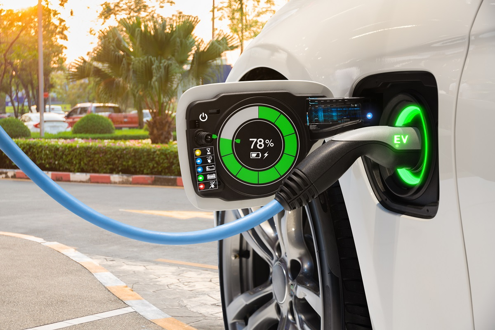

Tips to be more efficient
1. Practice the 3Rs
Source
The three R's: reduce, reuse and recycle, all help to cut down on the amount of waste we throw away. They conserve natural resources, landfill space and energy.
How to do it:
- Use old glass jars for storage
- Donate old items to charity
- Use little to no packaging
- Compost at home
Click here to learn more
2. Plant your own vegetables
 Source
Source
Gardening helps to save money especially in these times with sky high prices. Additionally, a vegetable garden will be more healthy as you have freedom to use little to no pesticides at all. You can even grow organic plants.
How to do it:
- Find a spot with reasonable sunlight
- Water your plants regularly
- Tomatoes and lettuce are the easiest to grow
- Use kitchen waste to make compost
Tip: You can plant on your roof using pots if you don't have a garden.
Click here to learn more
3. Make compost
Source
Compost helps to enrich the soil, suppress plant diseases and pest, and reduce the use of pesticides.
How to do it:
- Find kitchen waste like food scraps, peels and paper
- Choose a spot to make your compost
i.e: A bucket
- Throw your kitchen waste in your composting container
- Wait and aerate
Click here to learn more
4. Sort waste
Source
Waste sorting is the process where different types of waste are sorted. This facilitates recycling and makes it more efficient.
How to do it:
- Keep at least two containers, for organic and inorganic waste
- Make compost with the organic waste
- Dispose of plastic bottles in specialised bins
- Label your different bins
Note: The garbage collecting authorities near you need to be equiped for different types of waste for this to work best, nevetheless, do it just in case
Click here to learn more
5. Use LED lights
Source
Light Emmiting Diodes (LEDs) are up to 80% more efficient than traditional fluorescent and halogen lightbulbs, which helps to save money and energy and reduce polution
How to do it:
- Transition to Using LED lights
- They use less power and save money
- They are available in many colours and models, including smart lights
- Some even mimic the style of halogen bulbs
Click here to learn more
6. Use softcopies of documents
Source
Using softcopies instead of hardcopies saves paper and ink, additionally it is more versatile as one can share files easily and add details at any time
How to do it:
- Share digital copies of documents instead of printing
- Save your pictures in the cloud or on a hard drive instead in a photo galery
- Use emails instead of letters when possible
Click here to learn more
7. Use public transportation
Source
Public transport like metro and bus are cheaper compared to driving your own car and paying for gas, it also helps to reduce pollution.
How to do it:
- Use the bus if you can
- Consider using the metro if available
- Use your car only if necessary
Click here to learn more
8. Practice carpooling or riding a bike
Source
Carpooling is the practice of sharing a ride with other people, it will decrease the number of vehicles in use and reduce pollution. Riding a bike is another great idea, as you will not get stuck in traffic and you will be doing exercise
How to do it:
- Share your car with co-workers
- Ride a bike to your destination if possible
- Travel small distances on foot
Click here to learn more
9. Consider switching to an electric or hybrid vehicle

Source
Electric and hybrid vehicles use no to little gas compared to combustion engine vehicles, which reduces polution and saves monew
How to do it:
- Next time you plan on buying a car, consider an electric or hybrid one
Click here to learn more
10. Use energy efficient appliances
Source
Energy efficient appliances use less energy to do the same job, which saves money, energy and reduces polution
How to do it:
- Make sure you are using your appliances correctly
- Before buying an appliance check its efficiency sheet
- Do not be discouraged by the price, energy efficient appliances use less energy and last longer
Click here to learn more
11. Harvest rainwater
Source
Harvesting rainwater for watering and washing saves money and decreases demand for water which reduces droughts
How to do it:
- Harvest rain water
- Use it to water your plants and for washing
- Mainly use tap water for drinking and cooking
Click here to learn more
12. Use solar energy
 Source
Source
Using solar energy for heating water and electricity decreases spending and saves electricity for other purposes, it is also free of charge
How to do it:
- Use solar panels ans solar water heaters
- Do not let the installation cost discourage you, on the long run, it will be less costly
Click here to learn more